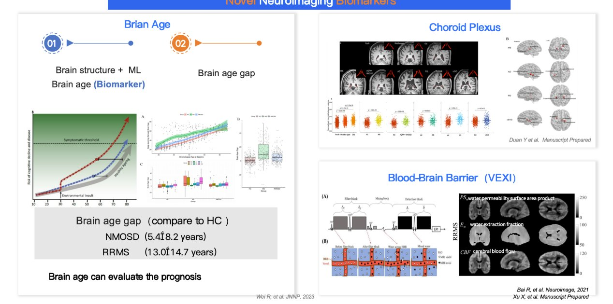
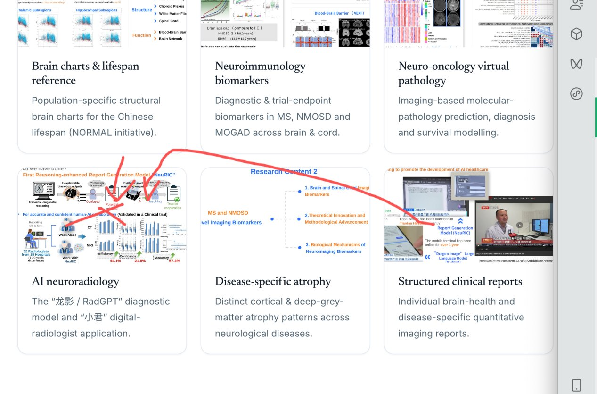
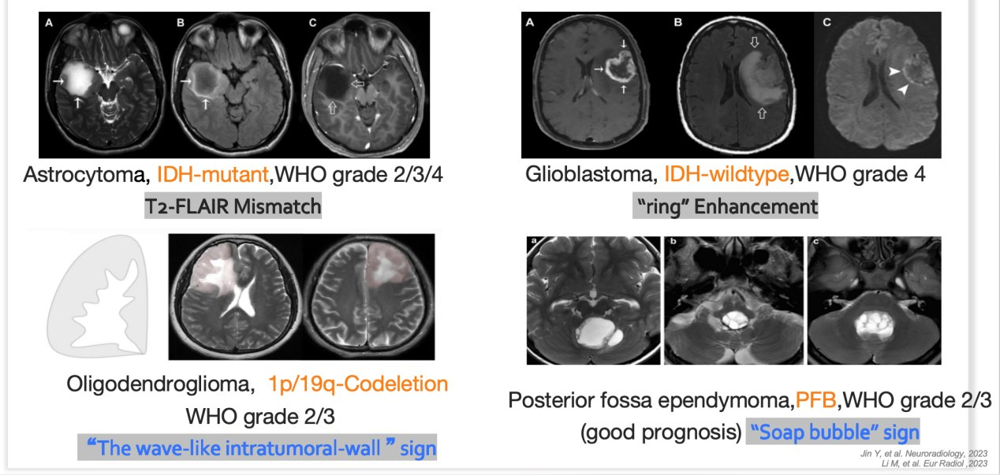
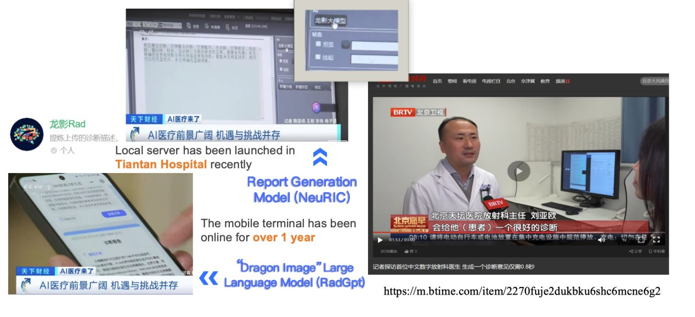

Imaging biomarkers discovered in large multi-centre cohorts, validated against clinical and molecular ground truth, and delivered as clinical-grade tools. Each theme below links to the underlying peer-reviewed work.
Population-specific structural brain charts for the Chinese lifespan, developed within the Chinese Lifespan Brain Mapping (C-LBM) Consortium with Prof. Xi-Nian Zuo (Beijing Normal University). These normative references enable precise, per-individual deviation maps — a standardized tool for assessing brain health and disease across age.

Diagnostic, prognostic and clinical-trial-endpoint biomarkers for neuroimmunological disease — spanning brain and spinal-cord atrophy, structural alterations and functional-network changes. Work includes differential atrophy patterns in NMO vs MS, comparative structural imaging across MOGAD/NMOSD/MS, and connectome alterations in clinically isolated syndrome.

Non-invasive prediction of molecular pathology, differential diagnosis and survival in brain and spinal-cord tumours from multimodal MRI — including amide-proton-transfer imaging and deep-learning models validated against histopathology. Examples include intramedullary tumour vs demyelination classification, posterior-fossa ependymoma subtyping, and four-tier survival stratification for spinal-cord astrocytoma.

Foundation and report-generation models for neuroradiology. With the Beijing Institute of Technology (Profs. Chuyang Ye & Meihui Zhang), the group co-developed “龙影” (Dragon Image / RadGPT) — a Chinese medical-imaging diagnostic large language model trained on Tiantan imaging data — and the “小君” (Xiaojun) digital-radiologist application (2024). A multicentre study (MAGNET) further explores AI-synthesised virtual contrast-enhanced MRI to reduce gadolinium dose.
